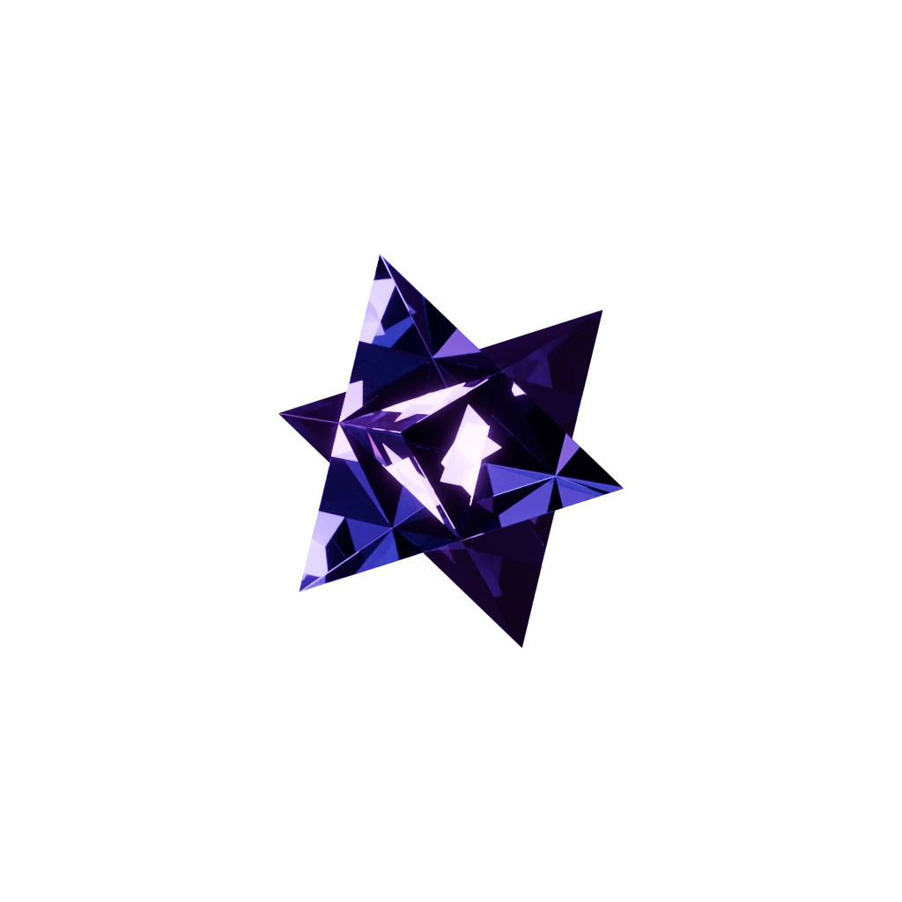

Dark glass. White fire.
A smoky amethyst Stella Octangula enclosing a smaller, luminous white Stella. The two turn independently; the light splits and refracts through the outer facets.
60 fps / 20-second loop

The same glass sculpture now appears on the homepage, with a fine violet halftone in the shadows. View the full loop ↗